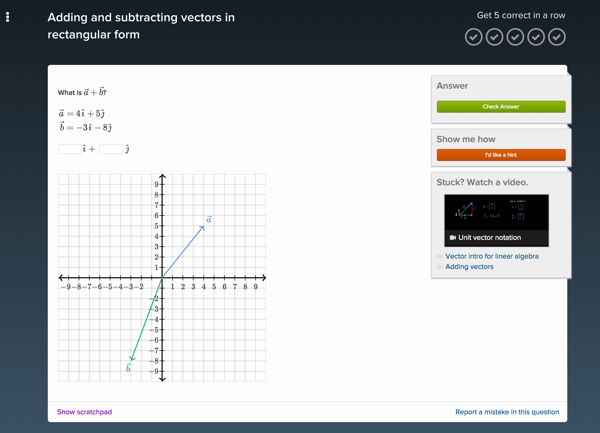
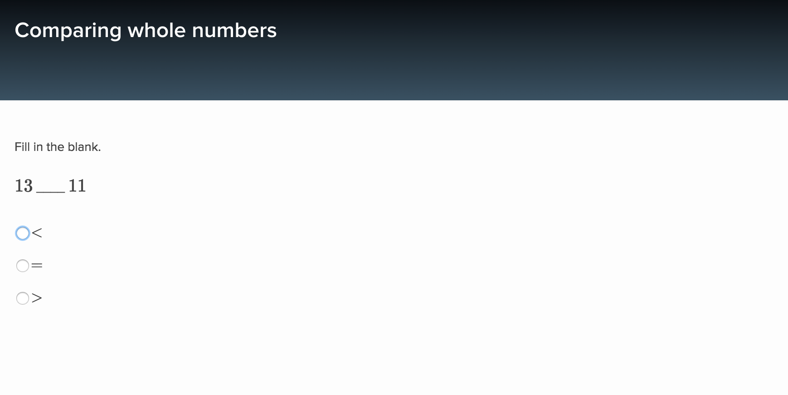
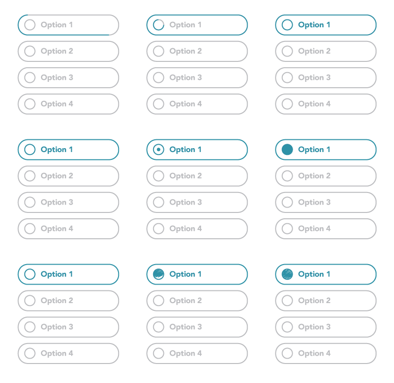
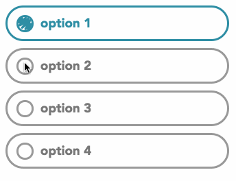
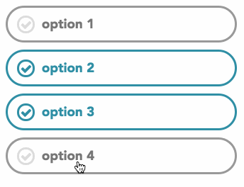
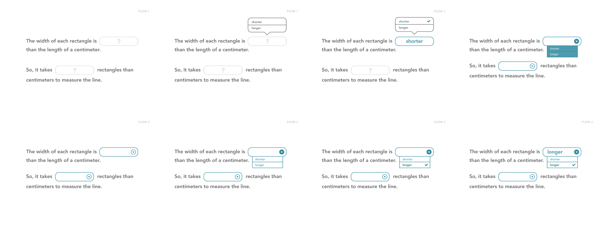
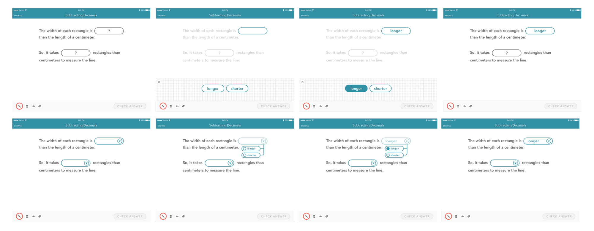

This past summer, I was fortunate enough to be a Product Design intern on Khan Academy's iOS team. Over the course of three months, my team launched math exercises onto the iPad app. Because Khan gives interns a great deal of autonomy, I also had the opportunity to lead design projects outside the iOS team. These projects ranged from revamping the interns recruitment page to creating invites for intern tea time. Below, you'll find details about my internship.
My summer-long project was to redesign different exercise types for the iPad interface. Previously, math exercises had only existed on web:
This project was challenging because of the large variety of exercises. Khan Academy offers a wide spread of math topics from basic arithmetic to linear algebra. Due to the breadth of material, Khan had to support exercises ranging from multiple choice to direct graph manipulation. My mission was to take these exercises and create a cohesive experience tailored for the iPad.
My first task was to redesign multiple choice exercises. On desktop, these problems appear as a set of radio buttons. Although radio buttons work well for the dexterity of a cursor, they are far too small for a touch screen device.
For my initial pass, I created some quick mocks in Illustrator. The idea was to create button-like inputs with whimsical animations.
With these static mocks in hand, I translated them into interactive prototypes using HTML, CSS, and JavaScript.
I also modified this prototype to work for multiple select exercises.
I tackled dropdowns using a similar process. In these iterations, I wanted to mix the default iOS pattern with the multiple choice aesthetic.
None of these designs felt right to me. They all looked "off" for one reason or another, so I decided to start from scratch. This time, I ignored the default iOS pattern, and instead tried to maintain a consistent style.
I chose a couple of designs to explore further in an interactive prototype.
Iterations